Printing Univariate Outlier Detection
print.univOutliers.RdPrints identified univariate outliers using boxplot, Grubbs test, or MAD method
Usage
# S3 method for class 'univOutliers'
print(x, ...)Examples
data(mtcars)
outliers_boxplot <- univOutliers(mtcars, "mpg", method="boxplot")
#> No outliers detected for mpg

outliers_boxplot
#> NULL
outliers_mad <- univOutliers(mtcars$mpg, method="mad")
outliers_mad
#> NULL
outliers_grubbs <- univOutliers(mtcars, "mpg", method="grubbs")
#> Outliers detected for mpg :
#> No outliers detected for mpg
outliers_grubbs
#> NULL